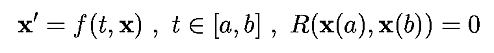
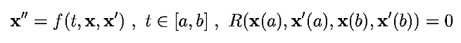
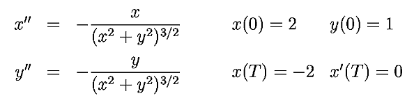
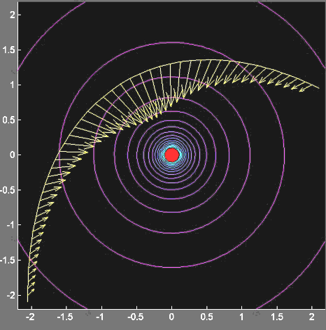

A BVP-Solver for Matlab
Intended use
The BVP-package
contains functions for solving nonlinear ODE-boundary value problems of
first and second order on nonequidistant grids.


Dimensions of the systems are arbitrary, local discretisation error
is O(2). Although every explicit second order BVP can be rewritten as a
first order BVP, I chose to implement a special solver for second order
problems, since they appear frequently. Applied to them, this solver is
more efficient than the general first order solver, because it is adapted
to the particular form of the problem.
The discretisation method used for first order problems is known as
the "Trapezoidal Rule", the method used for second order problems is a
generalisation of the symmetric difference discretisation to nonequidistant
grids (consult the readme-file for an explicit definition). These methods
limit the range of applicability to non-stiff problems.
Example
To illustrate the capabilities of the BVP-package, I will pick out an example
that is included in the package's demo-files. Consider a central force
field like a gravitational field and define the origin to be the center
of mass. At time t=0, position of a particle shall be given by p=(2,1)
(note that it is sufficient to treat any two-body problem in two dimensions,
due to conservation of angular momentum). At time t=T we want our particle
to have an x-coordinate equal to -2 and speed zero in x-direction.

How fast and in which direction do we have to shoot off our particle ?
What path does it take ? The picture below shows the solution to this problem
obtained by calling the second order BVP-solver. The arrows indicate the
forces that are exerted on the particle along its path.
